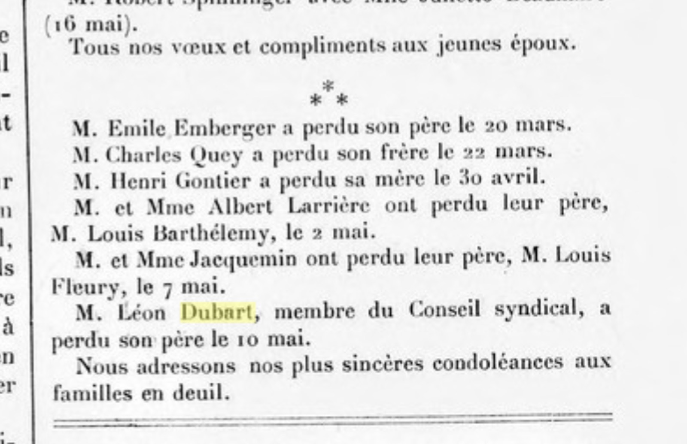

Presse
« L'Employé », organe du Syndicat des employés du commerce et de l'industrie, numéro du 25 mai 1903 (date de l'index), colonne des nouvelles du syndicat (mariages, deuils) : capture d'écran de l'image numérisée
Ce document établit
- Léon DUBART (P5227) est membre du Conseil syndical du Syndicat des employés du commerce et de l'industrie en mai 1903 : « L'Employé » annonce que « M. Léon Dubart, membre du Conseil syndical, a perdu son père le 10 mai », et Edmond DUBART, père de Léon, est mort le 10 mai 1903 (A0381, acte de décès). vérifié A1028
« « M. Léon Dubart, membre du Conseil syndical, a perdu son père le 10 mai. » »
- Le « Dubart » (prénom non donné) des procès-verbaux du Conseil syndical et des commissions du SECI de 1901 à 1910 (A0896, A0897, A0928, A0923-A0926, A0931-A0932, A0916-A0917, A0912, A0913, A0937, A0892) est très probablement Léon DUBART (P5227) : Léon est membre du Conseil en mai 1903 (IQ01), il l'est encore en 1915-1918 (A0881), et la notice du Maitron le dit membre du conseil d'administration « depuis janvier 1901 au moins » (A0959). partiellement vérifié A1029
- Selon un extrait OCR de l'index Geneanet de L'Employé daté du 25 mai 1903 : « …M. Léon Dubart, membre du Conseil syndical, a perdu son père le 10 mai… » ; Edmond DUBART, père de Léon, est mort le 10 mai 1903 (A0381). vérifié A0958
« « M. Léon Dubart, membre du Conseil syndical, a perdu son père le 10 mai. » »
Personnes concernées
Capture faite par Jessica sur l'image Gallica (26/11/2026), relue par la session principale le 27/11/2026. L'en-tête et le numéro ne figurent pas sur la capture : la date du 25/05/1903 vient de l'index Geneanet (S0518).
Continuer
Toutes les archives →Document précédentAD Puy-de-Dôme, index nominatif des recensements : fiches de Jeanne Baron, Jeanne Marchal et Anne Baron (1872-1901) ouvertes une à une (Clermont 3 E 500 1350, 1354, 1357, 1359 ; 6 M 2184, 2202 ; Ars-les-Favets 6 M 209-210 ; Blot-l'Église 6 M 831 ; Saint-Maigner 6 M 7226 ; Effiat 6 M 2801 ; Vodable 6 M 9051 ; Orléat 6 M 5099 ; Thiers 6 M 8312)Document suivantTable des décès et des successions, bureau de l'Enregistrement des 10e et 19e arr. (catalogué « 10e bureau »), lettres C et D, 1er janvier 1921-30 avril 1923 : section de mai 1922 (n° 1 à 57)